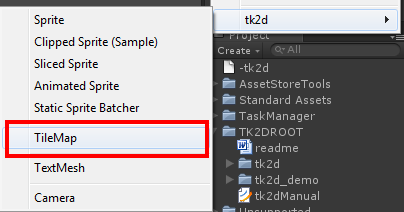
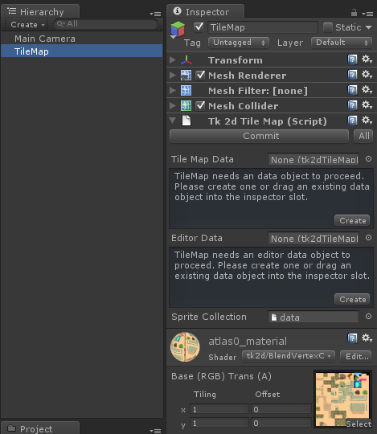
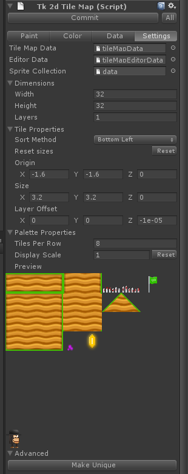
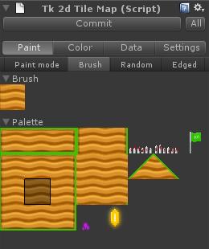
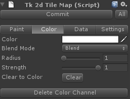
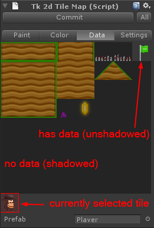

Documentation
Script Reference
Forum
Documentation
Script Reference
Forum
The Tile Mapper is currently in Beta. This means that features may be incomplete, and are subject to change. However, from version 1.80, the data is considered stable and will be supported in all future versions.
This document is still a work in progress.
The tile mapper currently supports the following features:
Create a sprite collection of your tiles by using any available method. Set up colliders for the sprites. You may use box colliders or polygon colliders.
Create a new tilemap (Create > tk2d > Tilemap)

Select and click edit on the newly created tilemap.

Create or reuse tilemap data, and editor data objects.
Tilemap data objects store information such as tile size, spawned prefabs and other shared data. Reuse tilemap data objects when you need to share data between scenes. These aren't tied in to the actual sprite collection, so as long as the sprite order is the same, you can have a snow sprite collection, a grass one, etc and reskin your level with ease.
Tilemap editor data objects store brushes, and other editor preferences.
You can also drag in the spritecollection you wish to use for this tilemap at this point, if the system hasn't automatically picked the right one.
Once the data is set up you will be presented with the full interface.

The first thing to do here is to make sure the Tiles Per Row and Display Scale parameters are set up correctly. Known issue: the preview currently will not clip correctly if it hits the edge of the window.
Switch to Paint mode in the toolbar above, select a few tiles and start painting!
Once you are done painting, remember to click Commit. You don't have to do this while testing, pressing play will automatically commit the data for you, but take care not to save your level like this. If the scene is saved while in Edit mode, the data will have to be reconstructed as the game is loaded in, and this may take a while.

Brush - Paint one tile at a time. Click dragging wil leave a trail of tiles. Random - Works best with multiselected tiles. Randomly picks a tile and paints that per cell. Click dragging will draw a rectangle and fill it randomly with tiles from the current selection. Edged - Works with 3 horizontal, 3 vertical or 3x3 tiles. Draw a rectangle in the scene and the edge tiles will be used in the edges, and the center tile will fill the rest of the rectangle. Very much like 9-slice.
Click on "Create Color Channel" to start painting vertex colors into the tilemap.

This lets you set up prefabs to spawn instead of tiles. Use this to mark player start points, win points, etc.

Select a tile, and drag a prefab into the slot.